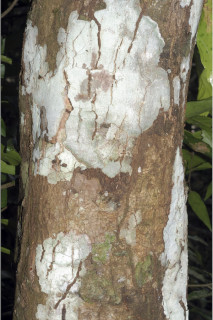
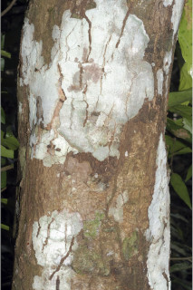
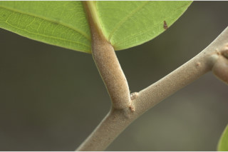
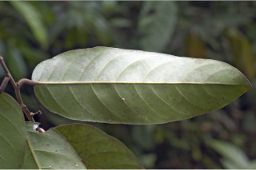
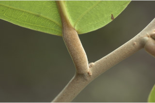
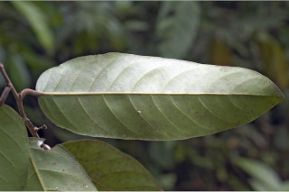
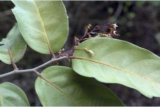
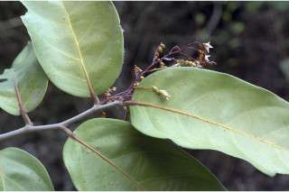

Trees up to 18 m tall.
18 ಮೀ. ಎತ್ತರದವರೆಗಿನ ಮರಗಳು.
18 മീറ്റര് വരെ ഉയരത്തില് വളരുന്ന മരങ്ങള്.
மரம் 18 மீ. உயரம் வரை வளரக்கூடியது
Bark thin smooth, flaky.
ತೊಗಟೆ ತೆಳು ಹಾಗೂ ನಯವಾಗಿದ್ದು ಚಕ್ಕೆಯುಕ್ತವಾಗಿರುತ್ತದೆ.
അടര്ന്ന് പോകുന്നതും, നേര്ത്തതും മിനുസമാര്ന്നതുമായ പുറംതൊലി.
மெலிதான வழுவழுப்பான பட்டை, வெடிப்புகளுடையது.
Branchlets usually drooping, terete, tomentose.
ಕಿರುಕೊಂಬೆಗಳು ಜೋತಾಡುವಂತಿದ್ದು ದುಂಡಾಕಾರದಲ್ಲಿದ್ದು, ದಟ್ಟ ಮೃದುತುಪ್ಪಳ ಸಹಿತವಾಗಿರುತ್ತವೆ.
സാധാരണയായി, തൂങ്ങി നില്ക്കുന്നതും, ഉരുണ്ടതും, കനത്ത രോമാവൃതവുമായ ഉപശാഖകള്.
சிறுநுனிக்கிளைகள் பொதுவாக தொங்கியது, குறுக்குவெட்டுத் தோற்றத்தில் வளையமானது, மென்உரோமங்களுடையது.
Leaves simple, alternate, spiral; stipules caducous; petiole stout, terete, whitish tomentose, 1.3 cm long; lamina 11-31 x 2.5-7.5 cm, narrow oblong to oblong, apex bluntly acute or acuminate, often rounded, base rounded or subcordate, chartaceous or subcoriaceous; secondary_nerves 7-12 pairs, gradually curved; tertiary_nerves reticulo-percurrent.
ಎಲೆಗಳು ಸರಳವಾಗಿದ್ದು, ಪರ್ಯಾಯ ಹಾಗೂ ಸುತ್ತು ಜೋಡನಾ ವ್ಯವಸ್ಥೆಯಲ್ಲಿರುತ್ತವೆ;ಕಾವಿನೆಲೆಗಳು ಉದುರಿಹೋಗುವಂತಹವು;ತೊಟ್ಟುಗಳು ದೃಢ ಹಾಗೂ ದುಂಡಾಗಿದ್ದು 1.3 ಸೆಂ.ಮೀ ಉದ್ದವಿರುತ್ತವೆ ಮತ್ತು ಮತ್ತು ದಟ್ಟವಾದ ಬಿಳಿ ಮೃದು ತುಪ್ಪಳದಿಂದ ಕೂಡಿರುತ್ತವೆ,ಪತ್ರಗಳು 11 - 31 X 2.5 – 7.5 ಸೆಂ.ಮೀ ಗಾತ್ರ, ಸಂಕುಚಿತ ಚತುರಸ್ರಾಕಾರದಿಂದ ಹಿಡಿದು ಚತುರಸ್ರಾಕಾರದವರೆಗಿನ ಆಕಾರ ಹೊಂದಿದ್ದು ಮೊಂಡು ಚೂಪು ಅಥವಾ ಕ್ರಮೇಣ ಚೂಪಾಗುವ ಇಲ್ಲವೆ ಕೆಲವು ವೇಳೆ ದುಂಡಾದ ತುದಿ,ದುಂಡಾದ ಅಥವಾ ಉಪ-ಹೃದಯಾಕಾರದ ಬುಡ, ತೊಗಲು ಅಥವಾ ಉಪ-ತೊಗಲಿನ ಮಾದರಿಯ ಮೇಲ್ಮೈ ಹೊಂದಿರುತ್ತವೆ;ಎರಡನೇ ದರ್ಜೆಯ ನಾಳಗಳು 7-12 ಜೋಡಿಗಳಿದ್ದು ಕ್ರಮೇಣ ಬಾಗಿರುತ್ತವೆ; ಮೂರನೇ ದರ್ಜೆಯ ನಾಳಗಳು ಜಾಲಬಂಧ ನಾಳ ವಿನ್ಯಾಸದಲ್ಲಿದ್ದು ಎಲೆದಿಂಡಿಗೆ ಅಡ್ಡವಾಗಿ ಕೂಡುವಂತವು.
ലഘുവായ ഇലകള്, ഏകാന്തരമായി, സര്പ്പിളക്രമത്തിലാണ്; അനുപര്ണ്ണങ്ങള് എളുപ്പം കൊഴിഞ്ഞ് വീഴുന്നതാണ്; 1.3 സെ.മീ നീളമുളള, ദൃഢമായ, ഇലഞെട്ട് ഉരുണ്ടതും കനത്തില് വെളുത്ത രോമങ്ങള് നിറഞ്ഞതുമാണ്; പത്രഫലകത്തിന് 11 സെ.മീ മുതല് 31 സെ.മീ വരെ നീളവും 2.5 സെ.മീ മുതല് 7.5 സെ.മീ വരെ വീതിയുമുണ്ട്, ആകൃതി വീതികുറഞ്ഞ ആയതാകാരം തൊട്ട് ആയതാകാരം വരെയും, പത്രാഗ്രം മുനപ്പില്ലാത്ത നിശിതാഗ്രമോ ദീര്ഘാഗ്രമോ ആണ്, ചിലപ്പോഴൊക്കെ വൃത്താകാരത്തിലുമാണ്, പത്രാധാരം വൃത്താകാരമോ ഉപഹൃദയാകാരമോ ആണ്, കടലാസ് പോലത്തെയോ ഉപചര്മ്മിലമോ ആയ പ്രകൃതം; സാവധാനം വളഞ്ഞുപോകുന്ന, 7 മുതല് 12 വരെ ജോഡി ദ്വീതീയ ഞരമ്പുകള്, ത്രിതീയ ഞരമ്പുകള് ജാലിത-പെര്കറന്റ് വിധത്തിലാണ്.
இலைகள் தனித்தவை, மாற்றுஅடுக்கமானவை, சுழல் போன்ற அமைப்பு கொண்டது; இலையடிச்செதில் உதிரக்கூடியது; இலைக்காம்பு தடித்தவை, குறுக்குவெட்டுத் தோற்றத்தில் வளையமானது, வெண்மையான மென்உரோமங்களுடையது 1.3 செ.மீ., நீளமானது; இலை அலகு 11-31 X 2.5-7.5 செ.மீ., குறுகிய நீள்சதுரம், அலகின் நுனி கூரியது அல்லது வால் போன்று குறுகி நீண்டது, பொதுவாக வட்டமானது, அலகின் தளம் வட்டமானது, சிறிய இதய (கார்டேட்) வடிவானது அல்லது (சப்கார்டேட்), சார்ட்டேசியஸ் அல்லது சப்கோரியேசியஸ்; இரண்டாம் நிலை நரம்புகள் 7-12 ஜோடிகள், சிறிது சிறிதாக வளைந்தது; மூன்றாம் நிலை நரம்புகள் வலைப்பின்னல் கொண்ட பெர்க்கரண்ட்.
Inflorescence panicled racemes, glabrous; flowers white.
ಪುಷ್ಪಮಂಜರಿಗಳು ಪುನರಾವೃತ್ತಿಯಾಗಿ ಕವಲೊಡೆಯುವ ಮಧ್ಯಾಭಿಸರ ಮಾದರಿಯಲ್ಲಿದ್ದು ದಟ್ಟ ಮೃದುತುಪ್ಪಳದಿಂದ ಕೂಡಿರುತ್ತವೆ;ಹೂಗಳು ಬಿಳಿ ಬಣ್ಣದವು.
പൂങ്കുല അരോമിലമായ റസീം പാനിക്കിളുകളാണ്; വെളുത്ത പൂക്കള്.
பேனிக்கிள்டு ரெசீம் மஞ்சரி, உரோமங்களற்றது; மலர்கள் வெண்நிறமுடையது.
Nut with 3 shorter and 2 longer accrescent_calyx_lobes; seed 1.
ಕಾಯಿಗಳು ಕರಟ ಮಾದರಿಯಲ್ಲಿದ್ದು ವೃಧ್ದಿಸಿದ 3 ಕಿರಿದಾದ ಹಾಗೂ 2 ಹಿರಿದಾದ ಪುಷ್ಪಪಾತ್ರೆಯ ಹಾಲೆಗಳ ಸಮೇತವಾಗಿರುತ್ತವೆ ಹಾಗೂ ಒಂದು ಬೀಜವನ್ನೊಳಗೊಂಡಿರುತ್ತವೆ.
കായ, ഒറ്റവിത്തുളളതും, 3 ചെറുതും 2 വലുതുമായ, വീര്ത്ത വിദളങ്ങളോടുകൂടിയ നട്ട് ആണ്.
உலர்கனி (நட்) 3 சிறிய மற்றும் 2 நீளமான நிரந்தரமான புல்லி இதழ்கள் உடையவை; ஒரு விதை கொண்டது.
 

 




 
